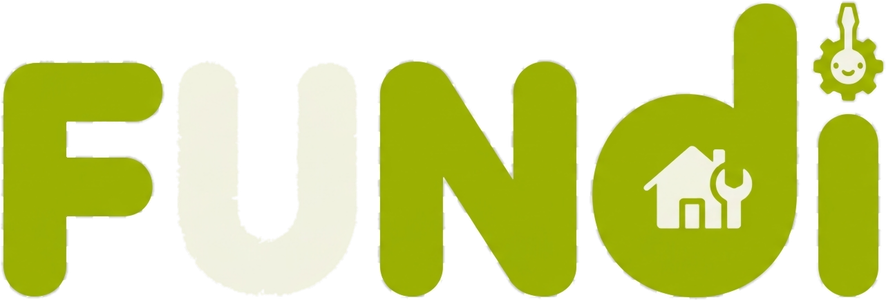

01
Discovery depends on word of mouth
Customers can struggle to find available providers beyond their personal network.

PRODUCT & BUSINESS MODEL
A two-sided marketplace connecting households with local tradespeople—starting in Kigali.
Working concept deck · October 2026
Fundi
Rwanda · Local services
Product overview · Pilot strategy · Revenue hypothesis
The customer problem Fundi is designed to address—hypotheses to validate with Kigali households and tradespeople.
Customers can struggle to find available providers beyond their personal network.
Rates, location, experience, and reputation are often difficult to compare in one place.
Independent fundis need a simple way to present their work and manage incoming requests.
The current product is a responsive React marketplace backed by PHP endpoints and JSON-file storage.
Search by trade, name, or area; filter the Kigali fundi directory.
Review a profile, location, rate, availability, and client ratings.
Choose a preferred date and describe the job for a selected fundi.
Track pending/accepted status; exchange contact details after acceptance.
After completion, the client can leave a star rating and optional review.
CLIENTS
FUNDIS
Marketplace flywheel
More reliable supply → better selection → more completed jobs → stronger reviews → more customer confidence.
A practical launch wedge is one city, a few high-frequency trades, and carefully chosen neighbourhoods.
WHERE
Concentrate demand and provider availability before expanding to other cities.
WHO
People who need local repair, improvement, tailoring, or maintenance work.
SUPPLY
Electricians, plumbers, carpenters, tailors, and adjacent service providers.
WEDGE
Recruit responsive providers in selected areas; expand as service density grows.
Recommended direction for testing; this is a proposed business model, not a feature currently implemented.
CORE MODEL TO TEST
Keep basic discovery and profiles free during the pilot. Once customers and fundis confirm value, test a modest fee on platform-attributed completed jobs.
LATER, IF EARNED
Consider paid visibility or a provider subscription only after proving that listings generate incremental, quality work. Keep ranking fair and label promotions.
A lean pilot can test both marketplace sides and reveal where trust or fulfillment breaks down.
Interview fundis, explain the value exchange, help create accurate profiles, and agree a clear response standard.
Start with community referrals, local groups, property managers, and small-business partnerships.
Manually learn why requests are accepted, declined, delayed, completed, or abandoned.
PILOT EXPERIMENT
Recruit a small cohort (for example, 20–30 providers as a test target) and measure active, responsive supply—not signup count alone.
LEARNING LOOP
Ask clients about trust, price clarity, and outcomes; ask fundis about lead quality, effort, earnings, and repeat use.
ALREADY IN THE APP
BEFORE A PUBLIC PILOT
Scale readiness: The current PHP + JSON setup is suitable for a prototype/demo, not production marketplace volume. Add robust authentication, authorization, auditability, backups, and scalable storage before launch.
0–30 DAYS · DISCOVERY
Interview households and fundis; map current discovery and payment behavior; confirm first trades and neighborhoods.
Output: pilot scope, trust checklist, pricing hypotheses.
30–90 DAYS · CONCIERGE PILOT
Recruit and coach a small cohort; track response, acceptance, completion, issues, repeat use, and willingness to pay.
Output: evidence for marketplace liquidity and economics.
90+ DAYS · PRODUCTIZE
Prioritize payment/fee flow, messaging, provider verification, support tooling, and better operational analytics.
Output: a safer and more measurable service marketplace.
A focused pilot can answer the big questions.
Start with one Kigali neighborhood, a dependable group of fundis, and a measurable set of completed jobs.
Pilot objective: prove trust · match quality · repeat value
Fundi
Local skills. Easier to find.
Business model and market assumptions are hypotheses for validation.